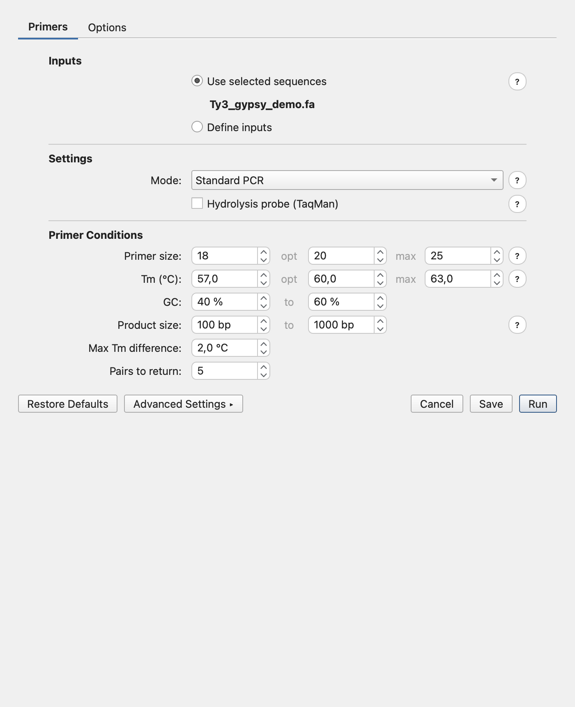
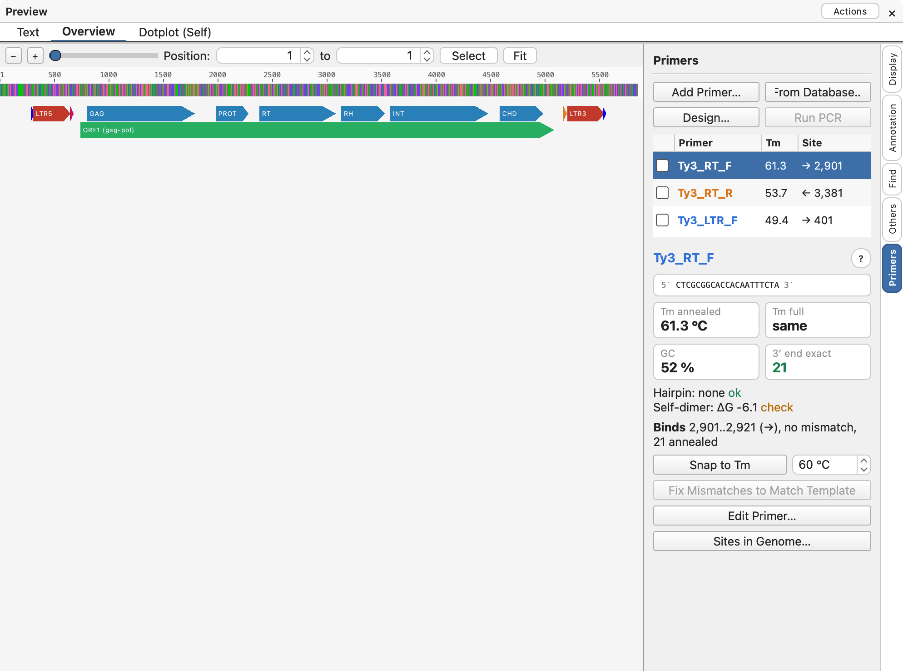
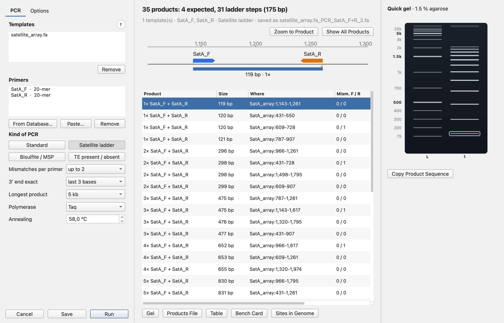
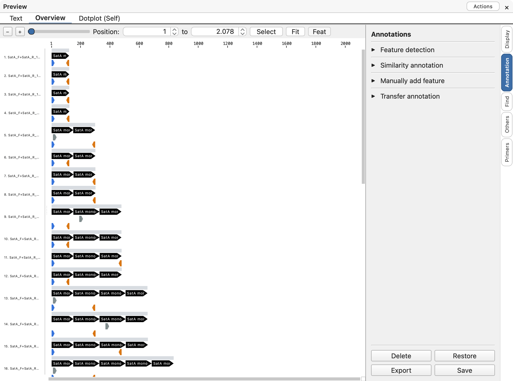
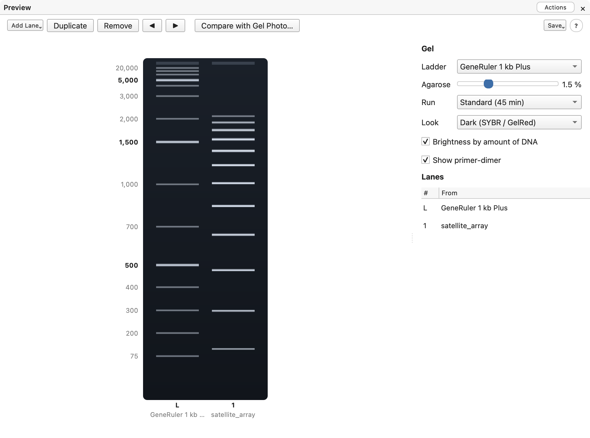
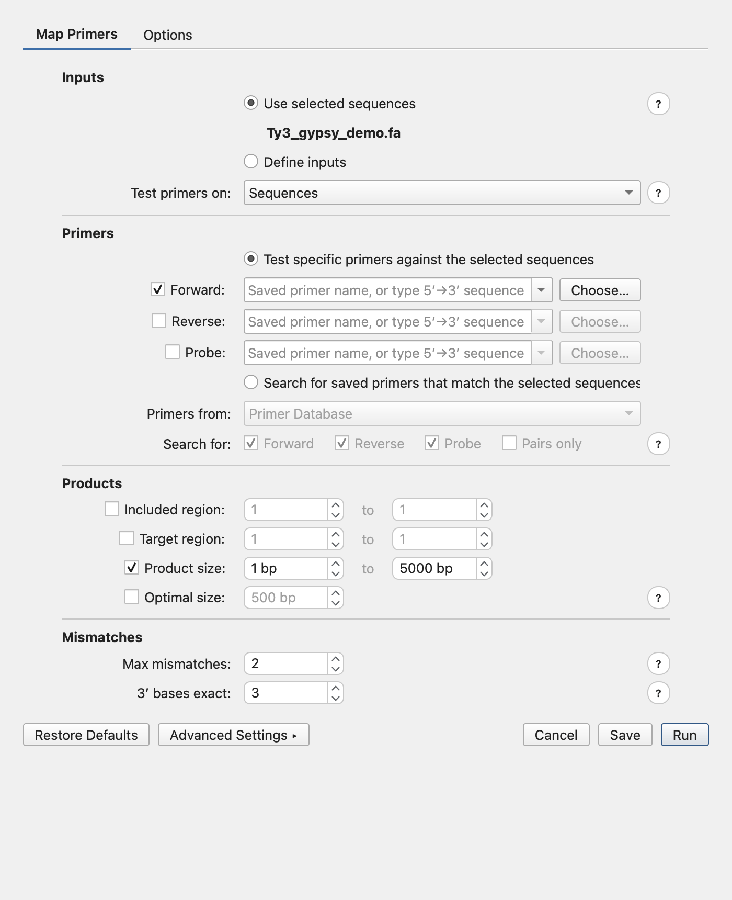
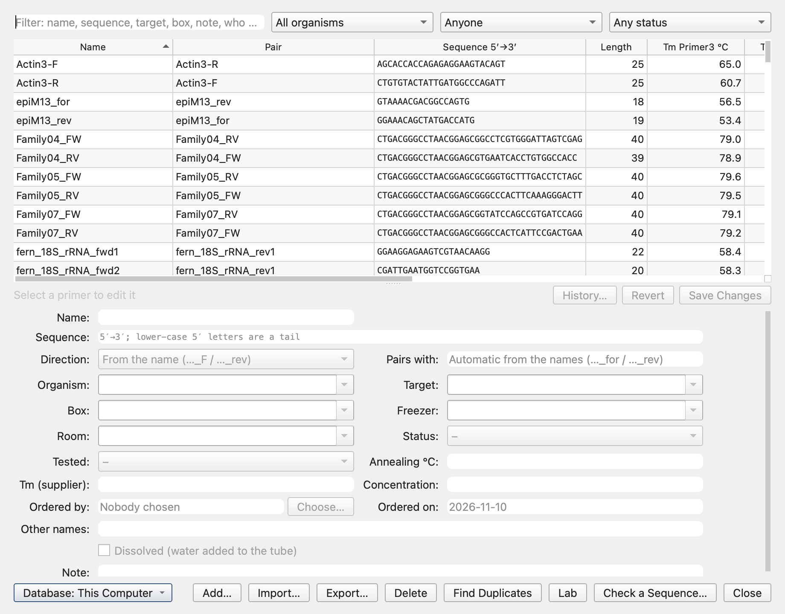

Chapter 12Primers and PCR
RepeatViewer designs PCR primers and FISH probes for repeats, shows primers on the sequence, runs in-silico PCR, draws the expected gel, and keeps the lab's primer inventory. Everything runs on your computer; nothing is sent online.
| Where | What |
|---|---|
| Tools → Primers and Probes → Design | Design primers or FISH probes |
| Tools → Primers and Probes → Map | Test primers against sequences, like Geneious' Map Primers |
| Tools → Primers and Probes → Database | The lab's primer inventory |
| Tools → Primers and Probes → In-silico PCR | The PCR window |
| Primers tab of the sequence side panel | Primers on the open sequence |
The toolbar can also show a Primers and Probes button (File → Setting → Toolbar → Add buttons…). It offers Design, Map and Database; right-click designs with the saved settings, or opens the Design window (choose on its Options tab).
12.1Quick start
- Click the FASTA you want primers for in the Files panel.
- Choose Tools → Primers and Probes → Design.
- Under Settings, choose the Mode (keep Standard PCR for an ordinary pair) and click Run.
- The report
<name>_primers.htmlopens. If Ask which pairs to add to the sequence after the run is on, tick the pairs you want and click Add to Sequence; they then appear in the sequence's Primers tab. - Tick two primers in the Primers tab and click Run PCR to see their products and the gel.
12.2Design

The window has the tabs Primers and Options.
Inputs: Use selected sequences (the FASTA selected in the Files panel; its name is shown) or Define inputs (a template FASTA for this run). Every sequence in the template file is used, up to 20.
Mode is the kind of design. Changing it loads sensible starting values (size, Tm, product size); Restore Defaults brings them back.
| Mode | Use it for | Template | You get |
|---|---|---|---|
| Standard PCR | An ordinary pair | Any sequence | Ranked pairs and a virtual gel |
| qPCR | Quantitative PCR | The target; optionally a single-copy reference gene FASTA | Short amplicons (70 to 180 bp), an optional TaqMan probe, and a matched pair on the reference gene for ΔCt |
| Ladder PCR | Showing that a satellite sits in tandem arrays | Monomers (one or many) | Outward-facing primers inside one monomer. On genomic DNA they give a ladder: 1×, 2×, 3× … the monomer |
| Satellite repeat oligos | FISH probes for a satellite or repeat family | Monomers or copies | 30 to 45 nt oligos present in at least Min coverage of the copies, without hairpins, ready to order with a 5′ label (FAM, Cy3, Cy5 …) |
| Chromosome painting (Chorus2) | Oligo pools that paint whole chromosomes or regions | The genome FASTA | Thousands of single-copy 45 nt oligos along the chromosomes, an order file and a density plot (see below) |
For ladder PCR and FISH oligos, use many monomers (for example extracted from an array) rather than one: the tool then keeps the parts shared by most copies.
Primer Conditions:
| Field | Meaning |
|---|---|
| Primer size | Minimum, optimum and maximum length (nt) |
| Tm (°C) | Minimum, optimum and maximum melting temperature of the binding part |
| GC | Allowed GC content (%) |
| Product size | Allowed amplicon length (bp) |
| Max Tm difference | Largest Tm gap between the two primers of a pair |
| Pairs to return | How many pairs the report lists |
Advanced Settings ▸ adds poly-X, GC clamp, 3′ stability, probe size and Tm, 5′ tails (M13, T7, restriction sites, or your own) and the Tm calculation (salt, Mg²⁺, dNTP and oligo concentration).
Options: what right-click on the toolbar button does; Ask which pairs to add to the sequence after the run; Add the designed primers to the Primer Database; the process window.
Design results
Next to the input:
gene.fa_primers.html the report (opens in Preview)
gene.fa_primers_details/
gene.fa_primers_primers.fa every primer, with order-ready names
gene.fa_primers_pairs.tsv table of pairs
gene.fa_primers_gel.svg virtual gel
gene.fa_primers.json all results
The report lists the pairs (Tm, GC, hairpin and dimer ΔG, product size, notes), the virtual gel and a Methods text paragraph for a paper. When nothing is found it explains why (for example how many primers failed on Tm or GC). Common fixes: widen the Tm range or the product size; for satellite oligos lower Min coverage or allow more mismatches.
12.3Primers on the sequence
The Primers tab of the sequence side panel lists the primers kept with this FASTA. Each is drawn on the sequence as an arrow where it binds (blue: points right; orange: points left); mismatches are red on the bases.

- Add Primer… types a new one, From Database… picks saved ones, Design… opens Design for this sequence.
- Click a primer to see its numbers and jump to it: Tm, hairpin and self-dimer ΔG, where and how well it binds. Double-click opens Edit Primer.
- Snap to Tm shortens or lengthens the primer along the template to reach a Tm; Fix Mismatches to Match Template makes it match this sequence; Sites in Genome… shows where it binds in a genome.
- Tick two primers and click Run PCR to see their products.
A tail is the 5′ part that does not bind (lower-case letters). It is copied into the product from cycle 3 on, so two Tm values are shown: annealed (the binding part, mismatches included) and full (the whole oligo).
Edit Primer shows the primer on its best site, with mismatches in red and matching 3′ bases in green; Site steps through other sites; − + make either end shorter or longer along the template; 5′ tail adds a restriction site (with padding bases so the enzyme cuts), a sequencing or promoter tail, or your own; and the dimer and hairpin checks give ΔG at 37 °C (below −9 kcal/mol for dimers or −3 for hairpins is a warning).
Primers are saved in a hidden name.primers_RV.json next to the FASTA and
follow it when it is renamed or moved.
12.4In-silico PCR
Tools → Primers and Probes → In-silico PCR, or Run PCR in the Primers tab.

- Templates: click FASTA files in the Files panel to add them (a whole genome works). Each template is one lane.
- Primers: from a sequence's Primers tab, From Database…, or Paste…. All combinations are tested, as in a real tube, including one primer at both ends.
- Kind of PCR:
- Standard: every product.
- Satellite ladder: products that step by a common size are labelled 1×, 2×, 3× (the monomer of a tandem repeat).
- Bisulfite / MSP: templates converted as methylated and as unmethylated DNA (plants: CG and CHG stay C when methylated).
- TE present / absent: one lane per accession.
- Mismatches per primer and 3′ end exact decide which sites count; Longest product, Polymerase and Annealing set the reaction.
The products table lists each product with its size, where it is and the mismatches of each primer; Expected yield is relative (fewer mismatches, shorter products and repeated sites give more DNA). The strip above the table shows the product you click: the forward primer (blue), the reverse primer (orange) and the stretch between. Small arrows are other places the primers bind. Zoom to Product and Show All Products frame the strip; Copy Product Sequence copies it.
Buttons at the bottom:
| Button | Opens |
|---|---|
| Gel | The full gel document (below) |
| Products File | The products FASTA, with primers and the template's annotations |
| Table | The products table |
| Bench Card | Mastermix volumes and the cycling program for the bench |
| Sites in Genome | Every binding site of each primer in a genome |
Outputs, next to the first template: <template>_PCR_<primers>.fa (the
products) and …_details/ (_products.tsv, _history.json,
_result.json). The products file opens like any multi-FASTA, with the primer
sites and the template's features on each product.

Bench Card: volumes per reaction and for all reactions plus extra (template added to each tube); annealing from the lower primer Tm (Taq 3 °C below, Phusion or Q5 3 °C above); extension from the longest product wanted (Taq 1 min per kb, Phusion or Q5 20 s per kb); freezer places from the Primer Database. Change the numbers on the right, then Save PDF or Print.
Sites in Genome: each genome sequence drawn on one scale, forward sites as ticks above the bar, reverse sites below (darker = fewer mismatches), and for a qPCR pair the number of products per haploid genome, the value to expect in a copy-number assay.
12.5The gel
A .rvgel file opens as an agarose gel. Every lane is a ladder, the products of
a PCR run, or products cut with a restriction enzyme. The gel is saved as it
changes.

| Control | What it does |
|---|---|
| Add Lane, Duplicate, Remove, ◀ ▶ | Edit and order the lanes |
| Ladder | The size marker (GeneRuler, NEB and others) |
| Agarose | Which sizes separate: 0.7 % for 1 to 12 kb, 3 % for 50 to 1,000 bp |
| Run | How far the front got; small bands can run off a long run |
| Look | Dark (SYBR, GelRed) or light (stained) gel |
| Brightness by amount of DNA | A band's brightness follows its mass (amount × length), as with SYBR, so short products look fainter |
| Show primer-dimer | Draw the primer-dimer smear |
| Cut with (per lane) | Digest the lane's products with a restriction enzyme |
Hover a band to see what it is, click to select it, double-click to open the products file.
Compare with Gel Photo… puts a picture of your real gel (PNG, JPG or TIFF) next to the in-silico one. Lanes and bands are found for you. Choose which photo lane holds the ladder (its bands give the size scale) and which gel lane each photo lane should match. Every band is then named: matched (within 7 %), off-target (a predicted off-target product), unexplained (try the PCR with more mismatches), and expected bands not seen.
12.6Map: test primers on sequences
Tools → Primers and Probes → Map. Tabs: Map Primers | Options.

- Inputs as in Design. Test primers on: every sequence, or the consensus of an alignment.
- Primers: Test specific primers (type a sequence or pick a saved one), or Search for saved primers that match (from the Primer Database or a primers FASTA; forward, reverse, probe; pairs only).
- Products: optional included and target regions, product size range, optimal size.
- Mismatches: maximum mismatches, and how many 3′ bases must match exactly.
- Advanced Settings: Tm conditions, and counting sites and products in a genome (both strands; every site within the allowed mismatches is found, also on a whole genome).
Output: <name>_primer_map.html with binding sites, predicted products and
a gel.
12.7Database: the lab's primer inventory
The Database is the record of every primer the lab has: sequence and Tm, what it amplifies and in which organism, where the tube is, whether it is in stock and whether it worked, who ordered it and when, and every change since.

The window
- Filter searches every field; the boxes next to it show one organism, one person or one status.
- Select a primer to edit it below the table, then Save Changes. Select several to set a field on all of them at once (for example a new box, or Used up).
- History… lists every change to the selected primer: who, when, what.
- Pair is found from the names (
_for/_rev,_fwd/_rev1,_FW/_RV,_F/_R); write it in Pairs with when the names do not show it. - Two Tm columns: Tm Primer3 is calculated by RepeatViewer; Tm supplier is the value from the synthesis report. They differ because each uses its own method and concentrations.
- Lab holds the lists the fields choose from: People (with roles; rename, merge two entries for one person, or remove; people who ordered primers stay as former members), Places (rooms, freezers, boxes), Organisms and Targets.
- Find Duplicates: the same sequence under two names, reverse complements, one primer inside another.
- Export…: the whole table (TSV), a FASTA, or an order sheet.
- Import…: a CSV, TSV or Excel sheet. The header row is found and known columns are read (name, sequence, organism, target, Tm, dissolved volume, ordered by, ordered on, box, freezer, room, status, tested, annealing, concentration, pair, note). Before importing it shows what is new, what is already there (same sequence under another name is kept as Other names) and which rows are skipped. Importing again later only adds what is new.
Sharing with the lab
- The button at the bottom left says where the database is: Database: This Computer ▾, or the name of a shared folder.
- One person: Database ▾ → Shared Database… and choose the lab's folder in a synced cloud folder (Sciebo, Dropbox). If there is no database there yet, RepeatViewer offers to make one and to copy your primers into it.
- Everyone else: Database ▾ → Shared Database… and choose the same lab folder in their own synced folder.
- If the shared database cannot be found (not synced yet, moved), a bar says so and offers Try Again or Use This Computer; nothing switches silently.
- The first time you change something, you are asked for your name; it appears in the history (Lab → Change Your Name…).
Each person and computer writes only its own change log, so the cloud service never has to choose between two versions of a file and no change is lost. If two people change the same field of one primer, the later change wins.
Check a new sequence against the stock
Before designing and ordering for a new plant, see what the lab already has: select the primers to test (none = all) and click Check a Sequence…. Give the Sequence (click a FASTA in the Files panel) and how strict to be (product size; mismatches, by default up to 2 but with the last 3 bases at the 3′ end matching). The report starts with From your Primer Database:
- Ready pairs: two saved primers that give a product, with size, mismatches and where the tubes are. Saved pairs, exact matches and pairs that worked before come first.
- Single primers that bind: no saved partner gives a product; one new partner is enough.
12.8Chromosome painting (Chorus2)
Choose Mode → FISH probes → Chromosome painting (Chorus2). The tabs change to Chorus2, Selection and Options. Chorus2 (Zhang et al. 2021) finds oligos that occur once in the genome along every chromosome. RepeatViewer runs it, or reads what it produced on a server, and then picks the pool you order.
Chorus2 tab:
- Run Chorus2 here: give the Genome; optionally paint only one chromosome or region. A genome of a few Gb takes hours and much memory: a server is better.
- Import results from the server: choose the Chorus2 BED.
- Chorus2 settings: probe length (45 nt), maximum homology (75 %), minimum dTm (10 °C), k-mer step (5 bp), ploidy, threads.
- NGS Filter (optional): genomic reads give each probe a k-mer score; probes in the lowest and highest score quantiles (default 10 % and 90 %) are dropped.
- Copy Server Command: the exact command lines for the server.
Install Chorus2 once, in its own conda environment (it needs an older pandas):
conda create -n chorus2 -c conda-forge -c bioconda python=3.9 "pandas<2" numpy cython pyfasta "primer3-py<2" pybigwig pybedtools kmer-jellyfish bwa
conda run -n chorus2 pip install --no-deps git+https://github.com/zhangtaolab/Chorus2.git
On a server:
conda activate chorus2
Chorus2 -g genome.fa -i genome.fa -s chorus2_out -t 16 -l 45 --homology 75 -d 10 --step 5 --ploidy 2 --docker True
Copy chorus2_out/genome.fa.bed back (or probes_kmer_score.bed after the
NGS filter) and import it. On Windows, run Chorus2 on a Linux server and import.
Selection tab:
| Field | Meaning |
|---|---|
| Min gap between probes | Neighbouring probes at least this far apart (25 bp) |
| Strand | Both (every second probe reverse-complemented, the Chorus2 default) or Plus |
| Amount | All probes, a Density (probes per kb; painting usually needs 0.1 to 1 per kb), or a Pool size (total number, spread evenly) |
| Regions | Keep probes only here, for example chr1, chr2:1-5000000 |
| Pool name, 5′ / 3′ adapter | Used in oligo names; adapters (for example T7) go into the order file only |
Results:
genome.fa_painting.html report: counts, density plot, per chromosome, methods
genome.fa_painting_details/
genome.fa_painting_probes.bed probes (BED, for example for IGV)
genome.fa_painting_probes.fa probe sequences
genome.fa_painting_order.tsv order file (adapter + probe + adapter)
genome.fa_painting.json all results
chorus2/ Chorus2's own files (when run here)
Painting pools are not added to the Primer Database (they hold thousands of oligos); use the order file. Too few probes for the pool size: lower the gap, widen the regions or the NGS score window, or rerun Chorus2 with a smaller k-mer step or a higher maximum homology.
12.9How it works
Primer picking, Tm, and the hairpin and dimer checks use Primer3 (primer3-py). The binding-site search (Map, coverage on copies, genome counts) is RepeatViewer's own, on both strands: small inputs are scored at every position; on a genome, every version of each primer's 3′ end within the allowed mismatches is looked up, so the same sites are found. Ladder PCR and FISH oligos build on these. Chromosome painting uses Chorus2 (MIT licence) in its own conda environment.
References: Untergasser et al. (2012) Nucleic Acids Research 40:e115 (Primer3). Zhang T, Liu G, Zhao H, Braz GT, Jiang J (2021) Plant Biotechnology Journal 19:1967–1978 (Chorus2).